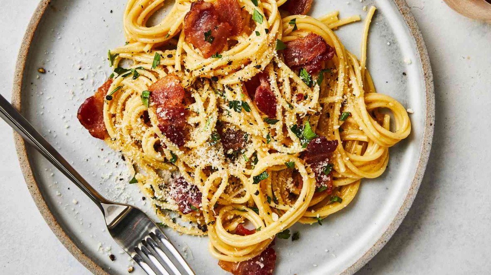

Savory and Easy Carbonara Pasta
The perfect date night recipe!

--------------
Ingredients:
- 1 pack of pancetta
- 4 eggs (only the yolks)
- 1 box of spaghetti pasta
- 1 bowl of grated pecorino
- 1 bunch of parsley
- 1 tablespoon olive oil
Instructions:
- Chop pancetta and fry on pan until golden brown
- Place pancetta into a separate bowl and save the fat oil
-
Whisk together 4 egg yolks, as much pecorino you like, and the fat
oil from the pancetta until you get a paste like substance
-
Boil pasta until almost al dente then strain and place into separate
bowl, save a cup of pasta water.
-
Put a tablespoon of olive oil into a pan on low heat, put pasta and
carbonara paste together
-
As the paste is mixing with the pasta, add pasta to help give the
paste a creamy consistency
-
Once everything is mixed together, serve on a plate and place
chopped pancetta and chopped parsley on top of pasta
- Enjoy!